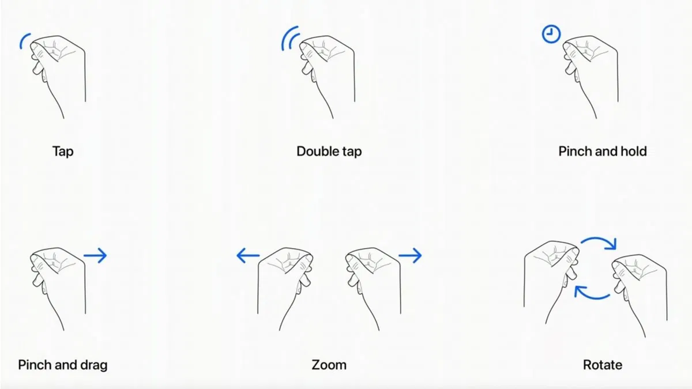

El Apple Vision Pro es un dispositivo revolucionario en el ámbito de la interacción persona-ordenador. Este casco de realidad mixta permite a los usuarios interactuar con el entorno digital mediante gestos, comandos de voz y la mirada. Aporta una experiencia inmersiva gracias a su sistema avanzado de AR y MR, mejorando la forma en que las personas se conectan y manipulan la información. Al eliminar la necesidad de interfaces físicas tradicionales, como el teclado o el mouse, transforma la forma en que interactuamos con las máquinas.
En la accesibilidad visual, las personas con discapacidad visual parcial podrían usar Vision Pro para ajustar el contraste, aumentar el tamaño del texto o resaltar detalles en el entorno a través de la realidad aumentada
Lectura de texto en tiempo real: Vision Pro podría aprovechar su capacidad de reconocimiento de texto para leer documentos, carteles o etiquetas en voz alta a las personas con baja visión o ceguera
Control con mirada y voz utiliza seguimiento ocular avanzado, lo que permite que los usuarios interactúen con las aplicaciones simplemente mirando elementos y confirmando acciones con un gesto o comandos de voz. Esto es útil para personas con movilidad reducida en las manos o brazos, ya que no requieren controles físicos.
Audio espacial adaptativo para las personas con discapacidades auditivas, el Vision Pro ofrece audio espacial personalizable. Esto significa que el sistema ajusta el sonido según la ubicación y las necesidades auditivas del usuario, proporcionando un sonido más envolvente o más claro según las preferencias y también se puede conectar con dispositivos de asistencia auditiva a través de Bluetooth.
Tecnología de Realidad Aumentada (AR) y Realidad Virtual (VR) para las personas con problemas de visión, la realidad aumentada y virtual puede proporcionar experiencias inmersivas que son personalizables. Las fuentes pueden agrandarse, los contrastes mejorarse, y los colores ajustarse, facilitando la lectura y el seguimiento visual de objetos.
Dictado y reconocimiento de voz mejorado para usuarios que no pueden escribir o tienen dificultades para hacerlo, el Vision Pro incluye capacidades avanzadas de reconocimiento de voz. Esto facilita la interacción con el dispositivo a través de dictado y comandos verbales, permitiendo la redacción de textos, la navegación por aplicaciones y la ejecución de acciones sin necesidad de usar las manos.
Compatibilidad con tecnologías de asistencia Apple ha trabajado en la integración de tecnologías de asistencia como VoiceOver, que convierte el texto en audio, con Vision Pro, esto podría ser aún más eficaz al ofrecer retroalimentación auditiva contextualizada en el espacio tridimensional de las aplicaciones, lo que podría mejorar la interacción con el contenido en tiempo real para usuarios con discapacidad visual.
Control por gesto minimalista, las personas con movilidad limitada pueden beneficiarse del hecho de que Vision Pro puede controlarse con gestos muy simples y con mínimos movimientos de las manos. Los gestos se realizan en el espacio frente al usuario, lo que significa que no se requiere un control físico como un ratón o teclado.
Interface multimodal Apple combina varias formas de interacción: manos, voz, ojos y dispositivos como sillas de ruedas u otros controles adaptados. Esta multimodalidad puede ofrecer mayor libertad y flexibilidad para adaptarse a las capacidades individuales del usuario.
Filtros de color y zoom de pantalla, al igual que en otros dispositivos Apple, se espera que Vision Pro integre funciones como los filtros de color y el zoom de pantalla, que son cruciales para personas con deficiencias visuales específicas como el daltonismo o baja visión.
Control con los ojos el seguimiento ocular es una de las características más importantes para la accesibilidad física. Las personas que no pueden usar sus manos o tienen movilidad limitada en los brazos pueden controlar el Vision Pro con la mirada. Esto permite seleccionar opciones o interactuar con aplicaciones simplemente mirando los elementos en la pantalla virtual.
Comandos de voz el Vision Pro está diseñado para responder a comandos de voz, lo que es crucial para personas con dificultades motoras. Los usuarios pueden abrir aplicaciones, hacer búsquedas, controlar el contenido y realizar muchas otras tareas solo usando su voz, reduciendo la necesidad de interacción física.
Gestos simples el dispositivo también incluye controles a través de gestos de las manos, pero lo importante es que estos gestos pueden ser muy mínimos. Los usuarios solo necesitan hacer movimientos suaves y simples, como pellizcar o mover los dedos, sin necesidad de precisión o fuerza. Esto facilita el uso para personas con movilidad limitada en manos o brazos.
Integración con dispositivos asistivos Vision Pro puede integrarse con otros dispositivos de accesibilidad, como sillas de ruedas motorizadas o interruptores adaptados. Apple suele ser compatible con diferentes tecnologías asistivas a través de Bluetooth y otras conexiones, lo que permite que personas con movilidad física reducida utilicen controles externos personalizados para navegar en el dispositivo.
Interfaz minimalista y ajustable la interfaz del Vision Pro está diseñada para ser simple y clara, con elementos accesibles sin necesidad de moverse demasiado dentro del espacio visual. Además, la personalización de la interfaz permite ajustar el tamaño de los elementos o la posición de las ventanas en la realidad aumentada, lo que facilita la navegación a personas que no pueden mover la cabeza o el cuerpo fácilmente.
Acceso sin manos una ventaja clave es la posibilidad de usar el dispositivo sin manos, mediante una combinación de comandos de voz y control ocular. Esto es fundamental para las personas con parálisis parcial o total, o aquellas que tienen problemas para usar sus extremidades superiores.
Sistemas de asistencia para movimientos limitados el Vision Pro también es compatible con configuraciones que permiten utilizar interruptores o botones externos, como los que están diseñados para ser presionados con otras partes del cuerpo, como los pies o la cabeza. Esto proporciona un control más accesible para personas que no pueden usar sus manos en absoluto.
Personalización de controles Apple suele permitir a los usuarios personalizar los métodos de entrada y control en sus dispositivos. En el Vision Pro, es probable que los usuarios puedan ajustar la sensibilidad de los gestos, la duración de las acciones y otras opciones para adaptarse a sus capacidades físicas. Esto es útil para quienes tienen control motor limitado o poco preciso.
Reducción de la dependencia de accesorio a diferencia de otros dispositivos de realidad virtual o aumentada que requieren el uso de controladores manuales, el Vision Pro elimina la necesidad de accesorios físicos adicionales. Esto reduce la carga física para usuarios que no pueden sostener o manejar estos controladores.
Las personas con discapacidades cognitivas a menudo se benefician de sistemas que reducen la carga mental asociada a la navegación o a tomar decisiones complejas. El Apple Vision Pro permite controlar muchas funciones solo con la voz, lo que evita tener que realizar varios pasos manuales o recordar rutas complicadas dentro de las aplicaciones. Esto es particularmente útil para usuarios con dificultades de atención o que experimentan confusión al manejar demasiadas opciones a la vez.
Apple suele ofrecer opciones avanzadas de organización y gestión de tareas, que incluyen recordatorios, listas y alarmas. El Vision Pro integrará estas funciones en su entorno inmersivo, lo que permitirá a los usuarios recibir notificaciones y alertas en un formato claro y en tiempo real, lo que puede ayudar a personas con problemas de atención o planificación. Las notificaciones contextuales también permiten mantener el foco en tareas importantes sin distraer con demasiada información a la vez.
La realidad aumentada (AR) del Vision Pro puede ser una herramienta poderosa para el aprendizaje visual, ya que permite que la información se presente de manera más visual y tangible. Las personas con discapacidades cognitivas a menudo se benefician de apoyo visual para comprender conceptos abstractos o secuencias de eventos. AR permite que la información se "materialice" frente al usuario, facilitando su comprensión y su procesamiento.
Apple tiene una amplia gama de aplicaciones de terceros diseñadas para personas con discapacidades cognitivas, como recordatorios visuales, agendas adaptadas, juegos educativos y más. El Vision Pro será compatible con muchas de estas aplicaciones, proporcionando a los usuarios acceso a herramientas que pueden mejorar sus habilidades cognitivas o asistirlos en su vida diaria.
Vision Pro seguramente integre opciones como VoiceOver y leer pantalla, donde el contenido en pantalla puede leerse en voz alta para los usuarios. Esto es particularmente útil para personas con dificultades de lectura o procesamiento del lenguaje. Además, el Vision Pro podría ofrecer resúmenes simplificados del contenido para facilitar la comprensión de textos más largos o complejos.
Apple incorpora accesibilidad cognitiva en sus interfaces a través de descripciones claras y simples. En el Vision Pro, esto puede tomar la forma de explicaciones contextuales y visuales para los objetos que los usuarios miren. Esto reduce la carga cognitiva de tener que adivinar la función de cada elemento y proporciona retroalimentación en tiempo real, ayudando a los usuarios a tomar decisiones más informadas.
El Vision Pro combina la realidad aumentada (AR) y la realidad virtual (VR) en lo que Apple llama realidad mixta. Esto significa que el dispositivo superpone objetos virtuales sobre el entorno real del usuario, permitiendo la interacción tanto con elementos virtuales como con el mundo físico. Esta tecnología se basa en sensores avanzados y cámaras externas para mapear el entorno del usuario en tiempo real.
Este dispositivo reemplaza y mejora a generaciones anteriores de gafas de realidad virtual y aumentada, como el HoloLens de Microsoft y las Google Glass. A lo largo del tiempo, la tecnología ha avanzado desde dispositivos enfocados principalmente en la realidad virtual hasta soluciones más versátiles que integran tanto AR como MR. La Vision Pro también supera las limitaciones de productos anteriores, ofreciendo una mayor precisión en la detección de gestos, un campo de visión más amplio, y una mejor integración con el ecosistema de Apple.